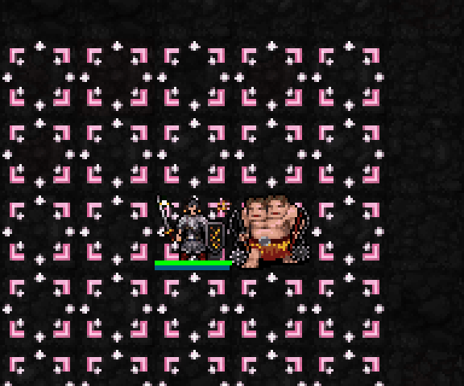

실제 SDL 필드에 새 도트를 렌더링한 시안입니다. 적 처치·HP 회복·보호막 흡수 전투 처리는 아직 연결하지 않았습니다. 화면의 적은 위치 확인용으로 남아 있습니다. 프레임과 상태 표시만 검사장 전용 설정으로 제어합니다.

적 쪽에서 초록 십자가가 캐릭터 위로 떠오르고 작은 벚꽃 다섯 송이가 주변으로 모였다가 사라집니다.
회복 연출 뒤 캐릭터를 감싸는 연한 분홍색 원형 보호막이 남습니다. 가운데가 투명해 캐릭터가 그대로 보입니다.
신앙50 해금 예정, 최소 기도술 없음, 추가 자원·행동 소모 없음. 자신과 적이 모두 성역 안일 때 경험치 대상 적을 직접 처치하면2+floor(기도술/6) HP 회복. 발동 간격20aut. 초과 회복 보호막 상한4+floor(기도술/3), 지속50aut, 성역 밖으로 나가면 해제.
일반 실행본은 승인된 miko-torii03을 유지합니다. 이번 결과는 전투 효과가 아닌 미리보기 전용입니다.